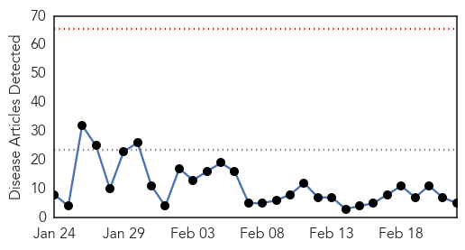
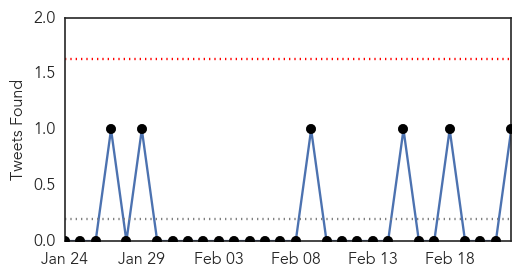

Influenza
30-Day Web Trend
0 alerts, 0 warnings

30-Day Twitter Trend
0 alerts, 0 warnings

Article Locations
Article Confidences
Top Articles:
Top Tweets:
- 0.524
- Influenza is a potentially fatal disease that is estimated to cause more deaths than accidents on roads: 1500 – 3500 influenza deaths...
Dengue Fever
30-Day Web Trend
8 alerts, 1 warnings

30-Day Twitter Trend
0 alerts, 0 warnings

Article Locations

Article Confidences

Top Articles:
Top Tweets:
-
No tweets found for Feb 22, 2015